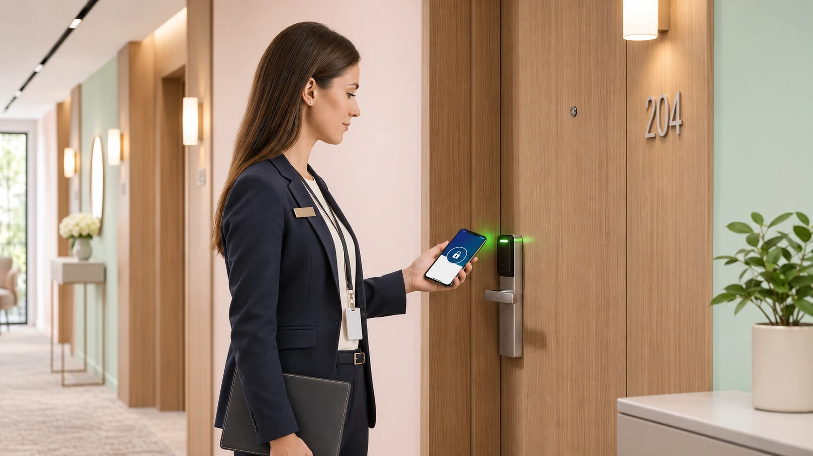
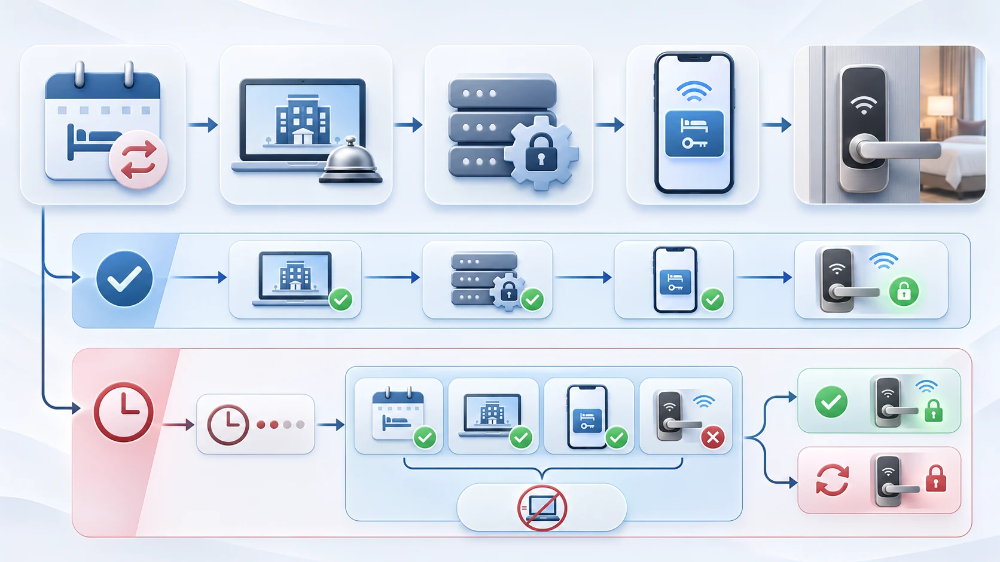

演示时能成功开门，并不代表预订变更后凭证仍能按预期工作。上线前，酒店与集成方应围绕取消、提前退房、重复下发和连接中断等情况，约定预期结果并逐项测试。不同系统支持的事件、离线行为和日志并不相同，必须以实际方案为准。
明确测试范围
先画出本次验收涉及的实际系统边界：预订信息从哪里产生，由谁负责传递，凭证在哪里创建，以及工作人员如何在门口确认结果。把 PMS、门锁或门禁平台、凭证交付渠道、测试手机、门锁和必要的网络组件列入配置清单，分别记录版本、环境和负责人。若某个系统不向项目开放日志，应在测试前指定替代取证方式，不能把不可见的状态当作正常。
选择经授权的测试房间和测试预订，提前通知前台、工程和集成团队，确认测试窗口、紧急停止方式及备用开门流程。测试人员只操作获授权的账户和连接；涉及重新发放、撤销或中断的用例，应先确认不会影响真实住客。
记录 PMS、门锁平台、锁具及其版本、测试房间、凭证方式和参与人员。使用获批准的测试预订与凭证，明确谁修改预订、谁查看平台、谁在门口验证。
约定预期结果
为每个用例先写明初始状态、触发动作、预期结果、约定的生效或更新窗口及证据来源。例如，取消预订后原凭证何时应停止可用，必须由酒店规则和实际方案共同确定；在约定期限之前与之后分别检查，才有依据判断延迟是否构成失败。
下发延迟、重复事件、入住时间变更、取消、提前退房、凭证重发和连接中断应分别建立用例。对于不支持的事件或无法安全复现的动作，登记为不适用或待验证，注明原因和补充证据的责任方，不能将未执行的用例计为通过。
每个用例都应记录预订操作时间、各系统可见状态、门锁实际结果和人工干预。预先约定凭证生效与失效时间、变更允许的处理时限，以及无日志时如何取证；缺少判定标准的用例不能直接判为通过。

移动钥匙流程概念示意；实际系统架构、凭证校验和离线方式依产品而定。
验收用例
| 场景 | 操作与检查 |
|---|---|
| 下发延迟 | 创建测试预订，记录事件、凭证送达和开门结果的时间。 |
| 重复事件 | 在获准的测试环境中重试受支持的事件，检查是否产生多余凭证及最终状态。 |
| 入住日期变化 | 修改入住或离店日期，在约定的边界时间检查新旧有效期。 |
| 取消与提前退房 | 记录操作时间，检查凭证状态以及约定更新时限后的门锁行为。 |
| 凭证重发 | 按产品流程替换凭证，分别核验原凭证和新凭证。 |
| 临时中断 | 仅中断获准控制的连接，记录期间的预期行为、恢复过程与最终状态。 |
不支持或无法安全复现的场景应标为不适用或待验证，不能猜测结果。
记录时间线
一条可复核的时间线至少包含源事件发生时间、各系统可见的接收或处理时间、手机端状态变化、门口实际测试时间，以及人工处理的起止时间。统一记录时区和时钟偏差；只显示日期、没有精确时间或无法读取的字段，应如实标记，不用其他系统的时间代填。
在权限开始前、有效期内，以及到期或约定撤销窗口之后分别测试，并记录使用的是原凭证还是替代凭证。平台显示已撤销而门锁仍可开门，或者手机界面显示成功但门口不能开门，都应分别记录系统状态和现场结果，再交由责任方调查。
统一记录时区及已知时钟偏差，分别记录源事件、平台更新、凭证变化和现场测试时间。根据项目约定，在生效前、有效期内以及失效或撤销后测试；不要使用未经约定的通用延迟阈值。
核对恢复结果
中断前先记录各系统和凭证的初始状态，并写下允许控制的具体连接、测试起止条件和恢复负责人。只在获批准的测试窗口内操作；中断期间是否允许开门、哪些变更会等待处理，都必须以该方案的文档和项目约定为准。
连接恢复后，按时间顺序核对待处理事件是否出现、各方报告的状态是否收敛，以及门口实际行为是否达到约定结果。若需要手工重发、重启或其他干预，记录操作者、操作时间和结果，并在未经干预的独立用例中复测，避免把人工修复误记为自动恢复。
中断恢复后，核对待处理变更、预订状态、凭证状态和实际门锁行为是否符合方案，并记录人工修复。不要在真实住客服务中擅自中断连接，也不要假设系统具备某种离线能力。
形成交接记录
交接记录应能让未参与测试的人复现判定：用例编号、设备和系统版本、测试引用、初始条件、执行步骤、预期结果、时间线、门口结果、证据位置、执行人和复核人。证据可以是获授权的状态截图或日志摘要，但应遮盖真实住客信息，不保存可用凭证、密钥或不必要的个人数据。
对每条记录明确标记通过、失败或待验证。失败项写明影响、责任方、临时处理和复测安排；缺少约定标准、日志或现场证据时保持待验证。系统版本或配置发生变化后，将复测记录关联原用例，而不是覆盖原来的证据。
每条记录包括用例编号、系统版本、测试引用、初始状态、操作、预期、时间、结果和证据。证据完整且符合约定才算通过；不符合约定记为失败；标准缺失或证据不足记为待验证。为失败项指定负责人和复测计划，并避免在共享报告中保存真实住客资料或有效凭证。
形成上线结论
上线评审应逐项查看失败与待验证事项，确认哪些是上线前必须关闭的问题，哪些可在明确期限内补证，以及备用通行方案由谁批准和执行。对任何暂时接受的风险，记录适用范围、负责人、复核日期和触发升级的条件。
进入试点后，保留受控的测试房间范围、前台处理流程和故障升级联系人；发现实际行为与验收假设不一致时暂停扩大范围并复核。PMS、平台、凭证流程或门锁固件变更后，根据变更影响选择相关用例重跑，不能把旧版本的通过结果直接用于新配置。
上线前由酒店、集成商和相关供应商共同审查未关闭事项，确定试点房间、备用通行程序和修复后的复测安排。系统或固件变化后，评估哪些用例需要重跑。
资料与边界
选题参考 LOXE 酒店技术博客。本文不声称 WAFU 已支持特定 PMS、移动钥匙或离线功能，发布前须核实实际接口和产品能力。
咨询酒店门禁项目
请提供系统对接背景、需要验证的凭证场景和待确认问题，以便结合实际方案核实接口与凭证行为。